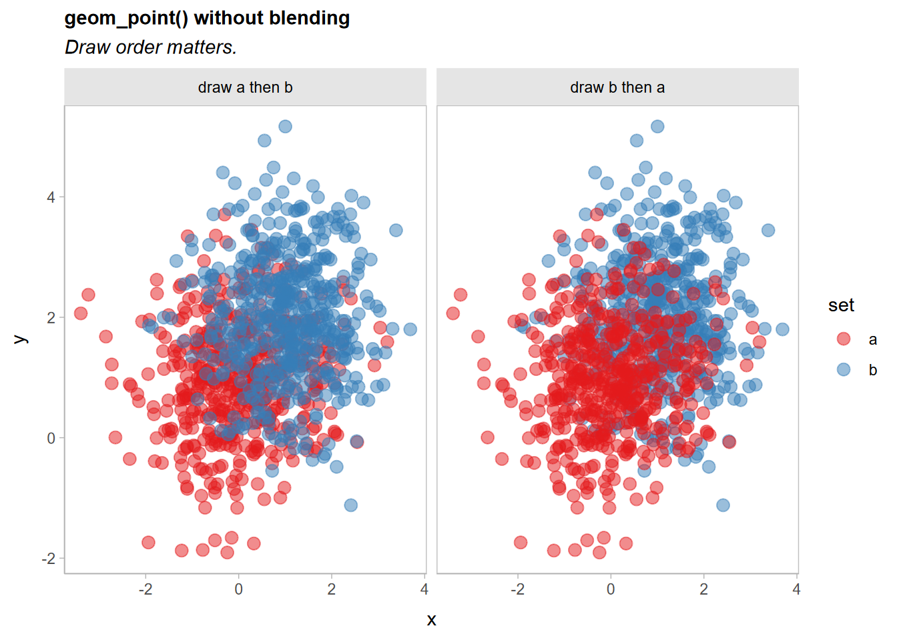

ggblend adds support for blend modes (like "multiply", "overlay", etc) to ggplot2. It requires R >= 4.2, as blending and compositing support was added in that version of R.
Installation
You can install the development version of ggblend using:
remotes::install_github("mjskay/ggblend")Blending within one geometry
We’ll construct a simple dataset with two semi-overlapping point clouds. We’ll have two versions of the dataset: one with all the "a" points listed first, and one with all the "b" points listed first.
library(ggplot2)
library(ggblend)
theme_set(theme_light())
set.seed(1234)
df_a = data.frame(x = rnorm(500, 0), y = rnorm(500, 1), set = "a")
df_b = data.frame(x = rnorm(500, 1), y = rnorm(500, 2), set = "b")
df_ab = rbind(df_a, df_b) |>
transform(order = "draw a then b")
df_ba = rbind(df_b, df_a) |>
transform(order = "draw b then a")
df = rbind(df_ab, df_ba)A typical scatterplot of such data suffers from the problem that how many points appear to be in each group depends on the drawing order (a then b versus b then a):
df |>
ggplot(aes(x, y, color = set)) +
geom_point(size = 3) +
scale_color_brewer(palette = "Set2") +
facet_grid(~ order) +
ggtitle("Scatterplot without blending: draw order matters")
A commutative blend mode, like "multiply" or "darken", is one potential solution that does not depend on drawing order. We can wrap geom_point() in a call to blend() to achieve this, using something like blend(geom_point(...), "darken") or equivalently geom_point(...) |> blend("darken"):
df |>
ggplot(aes(x, y, color = set)) +
geom_point(size = 3) |> blend("darken") +
scale_color_brewer(palette = "Set2") +
facet_grid(~ order) +
ggtitle("Scatterplot with blend('darken'): draw order does not matter")
Now the output is identical no matter the draw order.
Blending multiple geometries
We can also blend geometries together by passing a list of geometries to blend(). These lists can include already-blended geometries:
df |>
ggplot(aes(x, y, color = set)) +
list(
geom_point(size = 3) |> blend("darken"),
geom_vline(xintercept = 0, color = "gray75", size = 1.5),
geom_hline(yintercept = 0, color = "gray75", size = 1.5)
) |> blend("hard.light") +
scale_color_brewer(palette = "Set2") +
facet_grid(~ order) +
labs(title = "Blending multiple geometries together")
Blending groups within one geometry
Sometimes it’s useful to have finer-grained control of blending within a given geometry. Here, we’ll show how to use blend() with stat_lineribbon() from ggdist to create overlapping gradient ribbons depicting uncertainty.
We’ll fit a model:
m_mpg = lm(mpg ~ hp * cyl, data = mtcars)And generate some confidence distributions for the mean using distributional:
grid = unique(mtcars[ c("cyl", "hp")])
predictions = grid |>
cbind(predict(m_mpg, newdata = grid, se.fit = TRUE)) |>
transform(mu_hat = distributional::dist_student_t(df = df, mu = fit, sigma = se.fit))
predictions## cyl hp fit se.fit df residual.scale
## Mazda RX4 6 110 20.28825 0.7984429 28 2.973694
## Datsun 710 4 93 25.74371 0.8818612 28 2.973694
## Hornet Sportabout 8 175 15.56144 0.8638133 28 2.973694
## Valiant 6 105 20.54952 0.8045354 28 2.973694
## Duster 360 8 245 14.66678 0.9773475 28 2.973694
## Merc 240D 4 62 28.58736 1.2184598 28 2.973694
## Merc 230 4 95 25.56025 0.9024699 28 2.973694
## Merc 280 6 123 19.60892 0.8423540 28 2.973694
## Merc 450SE 8 180 15.49754 0.8332276 28 2.973694
## Cadillac Fleetwood 8 205 15.17801 0.7674501 28 2.973694
## Lincoln Continental 8 215 15.05021 0.7866649 28 2.973694
## Chrysler Imperial 8 230 14.85849 0.8606705 28 2.973694
## Fiat 128 4 66 28.22044 1.1218796 28 2.973694
## Honda Civic 4 52 29.50466 1.4914670 28 2.973694
## Toyota Corolla 4 65 28.31217 1.1451536 28 2.973694
## Toyota Corona 4 97 25.37679 0.9280143 28 2.973694
## Dodge Challenger 8 150 15.88096 1.0770037 28 2.973694
## Porsche 914-2 4 91 25.92718 0.8665404 28 2.973694
## Lotus Europa 4 113 23.90910 1.2628426 28 2.973694
## Ford Pantera L 8 264 14.42394 1.1660619 28 2.973694
## Ferrari Dino 6 175 16.89163 1.5508852 28 2.973694
## Maserati Bora 8 335 13.51650 2.0458075 28 2.973694
## Volvo 142E 4 109 24.27603 1.1625257 28 2.973694
## mu_hat
## Mazda RX4 t(28, 20.28825, 0.7984429)
## Datsun 710 t(28, 25.74371, 0.8818612)
## Hornet Sportabout t(28, 15.56144, 0.8638133)
## Valiant t(28, 20.54952, 0.8045354)
## Duster 360 t(28, 14.66678, 0.9773475)
## Merc 240D t(28, 28.58736, 1.21846)
## Merc 230 t(28, 25.56025, 0.9024699)
## Merc 280 t(28, 19.60892, 0.842354)
## Merc 450SE t(28, 15.49754, 0.8332276)
## Cadillac Fleetwood t(28, 15.17801, 0.7674501)
## Lincoln Continental t(28, 15.05021, 0.7866649)
## Chrysler Imperial t(28, 14.85849, 0.8606705)
## Fiat 128 t(28, 28.22044, 1.12188)
## Honda Civic t(28, 29.50466, 1.491467)
## Toyota Corolla t(28, 28.31217, 1.145154)
## Toyota Corona t(28, 25.37679, 0.9280143)
## Dodge Challenger t(28, 15.88096, 1.077004)
## Porsche 914-2 t(28, 25.92718, 0.8665404)
## Lotus Europa t(28, 23.9091, 1.262843)
## Ford Pantera L t(28, 14.42394, 1.166062)
## Ferrari Dino t(28, 16.89163, 1.550885)
## Maserati Bora t(28, 13.5165, 2.045807)
## Volvo 142E t(28, 24.27603, 1.162526)A basic plot based on examples in vignette("freq-uncertainty-vis", package = "ggdist") and vignette("lineribbon", package = "ggdist") may have issues when lineribbons overlap:
predictions |>
ggplot(aes(x = hp, fill = ordered(cyl), color = ordered(cyl))) +
ggdist::stat_lineribbon(
aes(ydist = mu_hat, fill_ramp = stat(.width)),
.width = ppoints(40)
) +
geom_point(aes(y = mpg), data = mtcars) +
scale_fill_brewer(palette = "Set2") +
scale_color_brewer(palette = "Dark2") +
ggdist::scale_fill_ramp_continuous(range = c(1, 0)) +
labs(
title = "Overlapping lineribbons without blending",
color = "cyl", fill = "cyl", y = "mpg"
) +
ggdist::theme_ggdist()
Notice the overlap of the orange (cyl = 6) and purple (cyl = 8) lines.
If we add a blend_group = cyl aesthetic mapping, we can blend the geometries for the different levels of cyl together with a blend() call around ggdist::stat_lineribbon():
predictions |>
ggplot(aes(x = hp, fill = ordered(cyl), color = ordered(cyl), blend_group = cyl)) +
ggdist::stat_lineribbon(
aes(ydist = mu_hat, fill_ramp = stat(.width)),
.width = ppoints(40)
) |> blend("multiply") +
geom_point(aes(y = mpg), data = mtcars) +
scale_fill_brewer(palette = "Set2") +
scale_color_brewer(palette = "Dark2") +
ggdist::scale_fill_ramp_continuous(range = c(1, 0)) +
labs(
title = "Overlapping lineribbons with blending",
color = "cyl", fill = "cyl", y = "mpg"
) +
ggdist::theme_ggdist()
Now the overlapping ribbons are blended together.